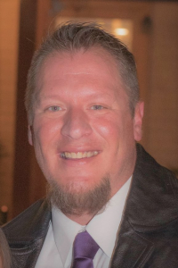
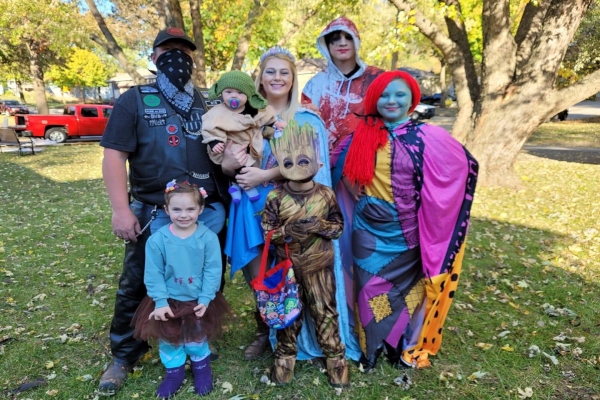
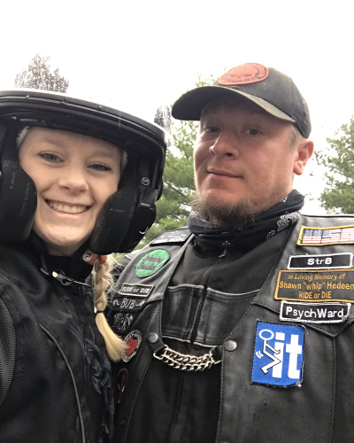

"Being a father is about adaptation and about making the most of the opportunities that are given to you."
~ Colin Adams in Parenting for New Dads
 Ok, so maybe the "AMAZING" part is a stretch but it got you engaged :) My name is Justin Strait and I'm using this page to introduce myself to you. I'm a thirty seven year old nerd, born and raised in the 'Heartland of America' also know as Kansas City. I'm currently working in the infrastructure world as a locate technician for USIC and 1800DIGRITE. I started locating two years ago after working as an industrial coating specialist and Operations Manager for twenty years at a prominent local body shop. I am also currently enrolled in a bootcamp program through the University of Kansas where I am learning full stack web development. This is slightly tough for me because Ive never been a fan of KU lol. Go MIZZ! I graduate the program in May of 2021 and am excited to move onto new things in my career path.
 I am a truely blessed man. I have a huge, supportive, loving, and happy family. I am lucky enough to be married to the most beautiful woman in the world! I met my wife Sierra Strait two years ago. We fell head over heels with eachother and started building a new and exciting life together from day one. We have a whole gaggle of children between the two of us. Our oldest is Leo. He's a varsity swimmer for the Blue Springs Wildcats. We call him the giant because at just fourteen, he's six foot 4 inches tall and one hundred eighty pounds lol. Our second oldest is eleven year old Makayla. Shes a superb artist and studies all forms of arts and crafts from painting, sketching, sewing, and even making her own jewelery line that we are going to set up on Etsy. Next is our six year old Jaxxon. Hes living his best life in first grade right now. This kid is our energizer bunny. He's always on the go and as witty as they come. Jax always has a punchline for the conversation. Coming in at fourth is Scarlett. She's the most anaylytical three year old you've ever met. Brutally honest and extremely intelligent, quite often you cant believe she just said that lol. She loves playing with her baby sister in her spare time. Last, but definently not least, is Saige. At only 7 months old, make no mistake, this girly rules the kingdom. Shes proving to be extremely independent and loves to smile. She adores all her siblings the same as they do her.
 If you made it through that last section you can probably understand that I dont have much freetime lol. On the odd occasion that my wife and I are able to get away, we love to go for rides on our motorcycle. Its also kind of how we met. We hit it off when I introduced myself to her at one of the local biker bars that I used to frequent. All of our friends are riders also and everyone knows me by my handle Str8. We support many of the local charity groups and rides in the Kansas City area including; Beaks'n Wings, G.O.A.R., and Bikers Advocates. We also consider ourselves "foodies". Sierra is an accomplished baker and I run a charcoal Weber like a pro. Our family definently eats good. We love riding to new restraunts, then recreating those things in our own kitchen. I also like to game on the xbox before bed, playing mostly solo titles like the Assassins Creed and Shadow of Mordor series. (And Yes, I just wore my riding gear for Halloween lol)